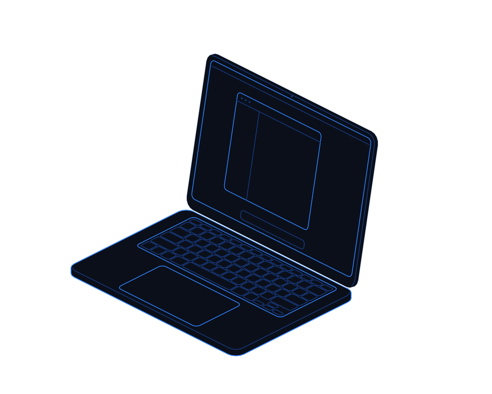
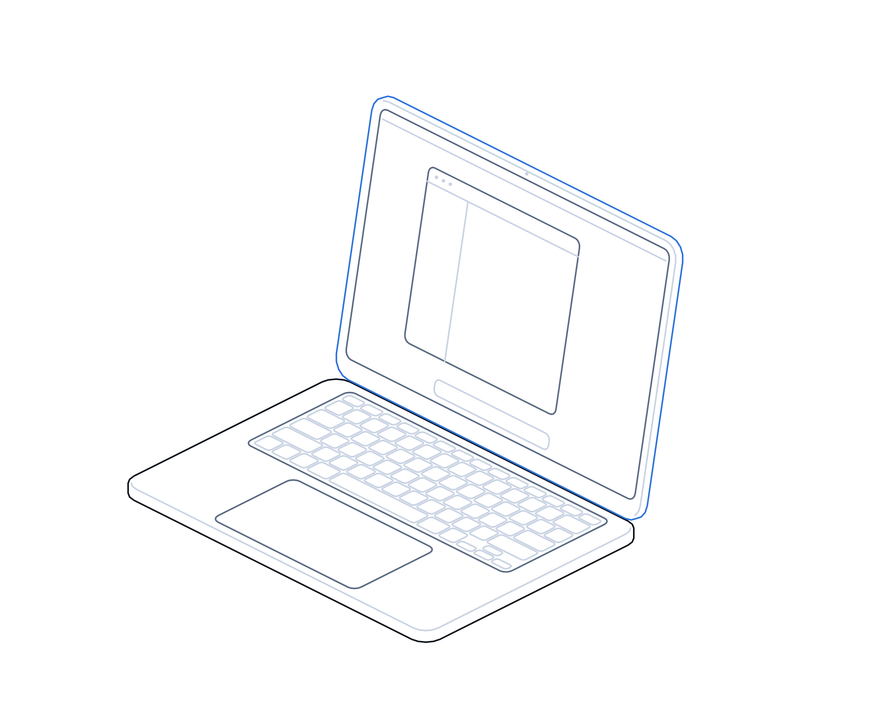

Hire Without the Heist

Hot topics · Playbook
No. 07 · November 2026
Playbook No. 07 · Hiring and insider risk
Hire without
the heist.
How to stop fake candidates, fake recruiters and malicious coding tests from becoming the way into your systems, your code and your money.
Transputec playbooktransputec.com
Inside
Contents
A practical guide to keeping fake candidates, fake recruiters and poisoned coding tests out of your organisation, with actions for this week, this month and this quarter.
Foreword03
Introduction04
01Know the con06
02Hire safely11
03Guard the keys16
 Contents
ContentsHire Without the Heist · Hot Topics · Playbook02 / 24
Foreword
The most expensive breaches now start with a friendly conversation.
At the end of October 2026, Binance lost billions of dollars in crypto in the largest theft on record. The FBI attributed it to a North Korean state group. Binance's own early account said the way in may have been one engineer's compromised laptop. How that laptop was compromised has not been made public.
What is public is the playbook these groups use elsewhere. They pose as recruiters and send developers coding tests that install malware. They pose as skilled remote contractors and get hired, paid and given access. US and allied agencies, and the UK's sanctions office, have warned about both for years.
None of this needs a zero-day exploit. It needs a busy hiring manager, a keen engineer and a process that trusts a video call. This playbook shows how to close those gaps without making hiring slow or hostile to genuine candidates.
The Transputec team
Transputec
Foreword Hire Without the Heist · Hot Topics · Playbook03 / 24
Introduction
Two cons, one goal: access.
North Korean groups have turned social engineering into a business. One route targets your developers with fake job offers. The other puts a fake worker on your payroll. Both aim at the same prize: credentials, code, keys and money.
Know the con
Learn the signs of a fake recruiter, a malicious coding test and a fake IT worker, so your people can spot them early.
Hire safely
Build identity checks, onboarding controls and contractor access rules that stop a fake persona getting far.
Guard the keys
Make sure no single person, laptop or approval can move money, deploy code or sign transactions alone.
Introduction Hire Without the Heist · Hot Topics · Playbook04 / 24
Your hiring process is now part of your security perimeter.
Treat every remote hire, contractor and coding test as a possible way in, and design checks that genuine candidates barely notice.
Introduction
Hire Without the Heist · Hot Topics · Playbook05 / 24
01
Part 01
Know
the con.
How fake recruiters and fake workers operate, and the signs that give them away.
01How the two schemes work
02Signs of a fake IT worker
03Three scenarios
Part 01
Hire Without the Heist · Hot Topics · Playbook06 / 24
Understanding the threat
Why your developers and your hiring desk are targets
Neither scheme needs clever hacking. Both rely on trust that nobody checked.
Developers and IT staff hold the keys to modern businesses. They can reach source code, cloud consoles, deployment pipelines and, in finance and crypto firms, the systems that sign payments. That makes them far more valuable to an attacker than an ordinary inbox.
The first route is the fake recruiter. A polished profile offers a well-paid role at an AI, crypto or tech firm. The process feels real: a screening chat, a video interview, a technical task. The task is the trap. Running the code installs malware that steals browser passwords, session tokens and wallet data.
US and allied agencies said in September 2026 that one North Korean group had infected at least 30,000 devices this way in eight months.1 The risk to you is that the developer runs the test on a work laptop, or on a personal machine that holds work credentials.
The second route is the fake hire. North Korean IT workers pose as nationals of other countries and apply for remote roles and freelance contracts. Facilitators receive company laptops and keep them online in so-called laptop farms, so the worker appears local.
The UK's Office of Financial Sanctions Implementation says it is almost certain UK firms are being targeted, and that paying these workers can breach sanctions even if you did not know.2 Some workers also steal data and extort employers once discovered.
Neither scheme relies on clever hacking. Both rely on trust that nobody checked. That is good news, because process fixes most of it.
Know the con Hire Without the Heist · Hot Topics · Playbook07 / 24
The malicious coding test
How a job offer turns into a breach
The pattern described by the FBI and allied agencies. Teach it to every developer.

01
A flattering approach
An unsolicited offer, often above market rate, from a recruiter for a well-known or fast-growing firm.
02
Move the conversation
The recruiter pushes to a messaging app or a special meeting tool, away from the original platform.
03
Run this code
A take-home task or live debugging exercise asks you to clone a repository, install packages or run a script.
04
Quiet theft
The code installs a stealer or remote access tool. Passwords, session tokens, keys and wallet data leave the device.
Know the con Hire Without the Heist · Hot Topics · Playbook08 / 24
Spot the fake worker
Signs of a fake IT worker
One sign proves nothing. Two or more should trigger extra checks.
Camera shy
Avoids video, keeps the camera off, has frozen or glitchy video, or looks different from one call to the next.
Story does not add up
Name spellings, location, education or work history change between the CV, profiles and conversations.
Odd logistics
Wants equipment shipped to an address that does not match their ID, or claims they cannot receive it at home.
Odd payments
Asks to be paid in crypto, into someone else's account, or keeps changing bank details.
Other tells reported by officials: background voices, reading from another screen, poor match between claimed and actual skills, and refusal to meet in person.
Know the con Hire Without the Heist · Hot Topics · Playbook09 / 24
Scenarios
Three situations your people may face
Developer
The recruiter with a take-home test
What happens
A senior engineer is invited to an interview and asked to run a repository to fix a bug.
The risk
Malware on a laptop with access to production code and cloud consoles.
The right move
Decline to run it on any work device. Report the approach to security.
Your control
A clear rule, a reporting route and endpoint detection on developer machines.
Hiring manager
The perfect remote candidate
What happens
A strong CV, a great rate, but the camera keeps failing and references only reply by email.
The risk
Hiring a sanctioned worker who gains access to code and data.
The right move
Pause the process and run an enhanced identity check before any offer.
Your control
A standard escalation path to HR, security and compliance.
Procurement
The agency contractor
What happens
An outsourcer places a developer on your project; their laptop logs in from a new country each week.
The risk
A fake worker placed through your supply chain.
The right move
Ask the agency for its identity checks and suspend access while you verify.
Your control
Contract clauses on vetting, location and sub-contracting.
Know the con Hire Without the Heist · Hot Topics · Playbook10 / 24
02
Part 02
Hire
safely.
Identity checks, onboarding and contractor access that stop a fake persona getting far.
01Verify identity
02Onboarding controls
03Devices, access and developers
Part 02
Hire Without the Heist · Hot Topics · Playbook11 / 24
Remote hiring
Five checkpoints for verifying a remote hire
Each step is light for a genuine candidate and hard for a fake one.
Screen the application
Check the CV against public profiles, look for duplicated wording or contact details across applicants, and call the phone number.
Interview on camera
Live video with the camera on throughout. Ask about the candidate's town, education and projects in detail.
Verify documents and history
Use a reputable identity verification service. Confirm employers and qualifications directly, not through contacts the candidate provides.
Meet before access
Where possible, meet in person or at a verified location before granting access. Ship equipment only to the address on the ID.
Re-check after hire
Repeat checks after onboarding and periodically. Watch for changes in payment details, address or working pattern.
Agencies and freelance platforms should meet the same standard. Ask them to show you, not tell you.
Hire safely Hire Without the Heist · Hot Topics · Playbook12 / 24
Onboarding controls
Controls for the first 30 days
What to set up before a new remote hire or contractor touches anything sensitive.
Managed device only
Company-issued, encrypted, managed laptop with endpoint detection. No access from personal devices.
IT
Location and VPN checks
Block commercial VPNs and alert on logins from unexpected countries or many IPs.
Security
No remote desktop tools
Prevent unapproved remote access software that laptop farms rely on.
IT
Least privilege
Grant only the repositories and systems the role needs. Expand access in steps.
Engineering lead
Payment checks
Pay only into an account in the worker's verified name. No crypto, no third parties.
Finance
Probation review
Review activity, output and access logs at 30 days before widening access.
Line manager
Hire safely Hire Without the Heist · Hot Topics · Playbook13 / 24
Devices and access for contractors
Contractors and agency staff often get more access, with fewer checks, than employees. Close that gap.
This week
List every contractor with access to code, cloud, finance or customer data, and who vouched for each one.
This month
Move contractors onto managed devices or virtual desktops. Remove standing admin rights and shared accounts.
This quarter
Add vetting, location and sub-contracting clauses to supplier contracts, with the right to audit.
Check
Can you revoke all of a contractor's access, sessions and tokens within one hour? Test it.
Owner
Head of IT with procurement
Bring this to the monthly review, with a date for each action.
Hire safely
Hire Without the Heist · Hot Topics · Playbook14 / 24
Developer guidance
Six rules for developers on job offers and code
Share this with every engineer. It protects them as well as you.
01
Never run interview code on a work device
If you take a test for another job, use a separate, disposable machine or virtual machine with no work credentials.
02
Read before you run
Check install scripts for obfuscated code, base64 strings or commands that fetch more files.
03
Open unknown projects in Restricted Mode
In VS Code, answer No to trusting the author, and check .vscode/tasks.json before trusting a folder.
04
Keep keys off everyday machines
No seed phrases, private keys or production secrets in files, browsers or notes on internet-connected laptops.
05
Verify recruiters elsewhere
Confirm the role via the company's own website or switchboard, not details the recruiter gives.
06
Report, do not just ignore
Tell security about suspicious approaches. Your report may protect a colleague who gets the same message.
Hire safely Hire Without the Heist · Hot Topics · Playbook15 / 24
03
Part 03
Guard
the keys.
Protecting payments, keys and code, and what to do when you suspect a fake worker.
01Protect crypto and payment keys
02Prioritise high-risk roles
03Respond and plan
Part 03
Hire Without the Heist · Hot Topics · Playbook16 / 24
Principles
Five principles for protecting keys and payments
Assume one person, one laptop or one approval can be compromised.
01
No single point of approval
Every movement of funds or keys needs approvals from more than one person, on separate devices and networks.
02
Keys never live on everyday laptops
Use hardware security modules or hardware wallets, kept apart from email, browsing and development work.
03
Signing systems are crown jewels
Restrict who can change signing logic, wallet software or approval rules, and log every change.
04
Watch for what is unusual
Alert on new delegations, unusual withdrawals and approvals outside normal hours or patterns.
05
Practise the bad day
Rehearse a theft scenario, including freezing funds, contacting issuers and informing regulators.
Guard the keys
Hire Without the Heist · Hot Topics · Playbook17 / 24
Prioritise
Which roles to protect first
Plot roles by the access they hold and how exposed they are to outside contact.
Harden
High access, low exposure
Treasury and signing staff. Strong device and approval controls.
Start here
High access, high exposure
Remote developers, DevOps and contractors. Verify, isolate and monitor.
Standard controls
Low access, low exposure
Most office roles. Normal awareness training.
Train and watch
Low access, high exposure
Recruiters and HR. Teach the signs and the escalation route.
Exposure to outside contact →
↑ Access to money, keys or code
Guard the keys Hire Without the Heist · Hot Topics · Playbook18 / 24
Response
If you suspect a fake IT worker
Move quickly, but quietly. Tipping off the worker can lead to data theft or extortion.
01
Preserve evidence first
Capture logs, device activity and communications before taking visible action.
02
Cut access in one go
Revoke accounts, sessions, tokens, SSH keys and VPN access at the same time, and recover devices.
03
Check what was touched
Review code repositories, cloud accounts and data exports for copying or changes, including backdoors.
04
Stop payments and assess sanctions exposure
Pause payments and take legal advice. Report to OFSI if a breach may have occurred.
05
Report
Tell the NCSC and Action Fraud as appropriate, and the National Crime Agency if you are in the regulated sector.
06
Expect extortion
Do not pay ransom demands without legal and law enforcement advice. Prepare for leaked code.
Guard the keys Hire Without the Heist · Hot Topics · Playbook19 / 24
Your plan
This week, this month, this quarter
A realistic sequence for most UK organisations.
This week
Brief developers and recruiters on fake recruiters and coding tests. Publish the reporting route.
CISO or IT lead
This week
List remote hires and contractors with privileged access, and who verified them.
HR with IT
This month
Add video, document and reference checks to remote hiring. Ship kit only to ID addresses.
HR
This month
Block commercial VPNs and unapproved remote desktop tools on company devices.
IT
This quarter
Separate payment and key approvals across people and devices. Test the response plan.
Finance and security
This quarter
Update supplier contracts with vetting and sub-contracting clauses.
Procurement
Guard the keys Hire Without the Heist · Hot Topics · Playbook20 / 24
Before you hire
Questions for leaders and suppliers
Use these in your next leadership meeting and supplier review.
For your leadership team
?Who in our organisation can move money or deploy code from a single laptop?
?Would we notice if a remote employee was being controlled from another country?
?Do our developers know not to run interview tests on work devices?
For agencies and outsourcers
?How do you verify identity and location for the people you place with us?
?Do you allow sub-contracting, and how would we know?
?How fast can you remove a worker and their access if we raise a concern?
Guard the keys
Hire Without the Heist · Hot Topics · Playbook21 / 24
Checklist
Are you ready to hire without the heist?
Tick what is in place. Anything blank is your next step.
Live video and document checks for every remote hire
Equipment shipped only to the verified address
Developers told not to run interview code on work devices
With a simple way to report approaches.
Commercial VPNs and remote desktop tools blocked
On all company-managed devices.
Payments only to accounts in the worker's verified name
No crypto, no changes without checks.
Multi-person, multi-device approval for funds and keys
No single point of failure.
A tested plan for removing a suspected fake worker
Including legal and sanctions advice.
Sources: [1] NPA, FBI and partners, WaterPlum advisory, Sep 2026. [2] OFSI advisory, Sep 2024.
Guard the keys Hire Without the Heist · Hot Topics · Playbook22 / 24
Glossary
Words worth knowing
Fake recruiter
An attacker posing as a hiring manager or agency to get a target to run malicious code.
Malicious coding test
A take-home or live technical task that installs malware when run.
Fake IT worker
A person working under a false identity, often to earn money for a sanctioned state.
Laptop farm
A place where company laptops are kept online so remote workers can control them and appear local.
OFSI
The Office of Financial Sanctions Implementation, part of HM Treasury.
Session token
Data that keeps you logged in. If stolen, it can bypass multi-factor authentication.
Hot wallet
A crypto wallet connected to the internet for fast transactions.
Restricted Mode
A VS Code setting that stops a project running code automatically when opened.
Least privilege
Giving people only the access their role needs, and no more.
Endpoint detection
Security software that spots and stops malicious activity on devices.
Glossary Hire Without the Heist · Hot Topics · Playbook23 / 24
Hire with
confidence.
We help UK organisations secure remote hiring, contractor access and developer devices, so growing your team never opens the door to an attacker.
Talk to our security teamtransputec.com
Read the companion report
The job offer that empties the vault (companion intelligence report)
Transputec · Hot Topics · No. 07